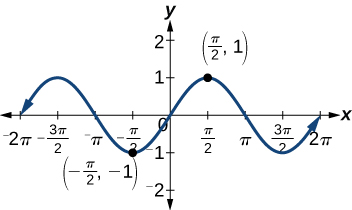

Simplifying and Verifying Trigonometric Identities
In espionage movies, we see international spies with multiple passports, each claiming a different identity. However, we know that each of those passports represents the same person. The trigonometric identities act in a similar manner to multiple passports—there are many ways to represent the same trigonometric expression. Just as a spy will choose an Italian passport when traveling to Italy, we choose the identity that applies to the given scenario when solving a trigonometric equation.
In this section, we will begin an examination of the fundamental trigonometric identities, including how we can verify them and how we can use them to simplify trigonometric expressions.
Verifying the Fundamental Trigonometric Identities
Identities enable us to simplify complicated expressions. They are the basic tools of trigonometry used in solving trigonometric equations, just as factoring, finding common denominators, and using special formulas are the basic tools of solving algebraic equations. In fact, we use algebraic techniques constantly to simplify trigonometric expressions. Basic properties and formulas of algebra, such as the difference of squares formula and the perfect squares formula, will simplify the work involved with trigonometric expressions and equations. We already know that all of the trigonometric functions are related because they all are defined in terms of the unit circle. Consequently, any trigonometric identity can be written in many ways.
To verify the trigonometric identities, we usually start with the more complicated side of the equation and essentially rewrite the expression until it has been transformed into the same expression as the other side of the equation. Sometimes we have to factor expressions, expand expressions, find common denominators, or use other algebraic strategies to obtain the desired result. In this first section, we will work with the fundamental identities: the Pythagorean Identities, the even-odd identities, the reciprocal identities, and the quotient identities.
We will begin with the Pythagorean Identities (see Table 1), which are equations involving trigonometric functions based on the properties of a right triangle. We have already seen and used the first of these identifies, but now we will also use additional identities.
| Pythagorean Identities | ||
|---|---|---|
The second and third identities can be obtained by manipulating the first. The identity is found by rewriting the left side of the equation in terms of sine and cosine.
Prove:
Similarly, can be obtained by rewriting the left side of this identity in terms of sine and cosine. This gives
The next set of fundamental identities is the set of even-odd identities. The even-odd identities relate the value of a trigonometric function at a given angle to the value of the function at the opposite angle and determine whether the identity is odd or even. (See Table 2).
| Even-Odd Identities | ||
|---|---|---|
Recall that an odd function is one in which for all in the domain of The sine function is an odd function because The graph of an odd function is symmetric about the origin. For example, consider corresponding inputs of and The output of is opposite the output of Thus,
This is shown in Figure 2.

Recall that an even function is one in which
The graph of an even function is symmetric about the y-axis. The cosine function is an even function because For example, consider corresponding inputs and The output of is the same as the output of Thus,
See Figure 3.

For all in the domain of the sine and cosine functions, respectively, we can state the following:
- Since sine is an odd function.
- Since, cosine is an even function.
The other even-odd identities follow from the even and odd nature of the sine and cosine functions. For example, consider the tangent identity, We can interpret the tangent of a negative angle as Tangent is therefore an odd function, which means that for all in the domain of the tangent function.
The cotangent identity, also follows from the sine and cosine identities. We can interpret the cotangent of a negative angle as Cotangent is therefore an odd function, which means that for all in the domain of the cotangent function.
The cosecant function is the reciprocal of the sine function, which means that the cosecant of a negative angle will be interpreted as The cosecant function is therefore odd.
Finally, the secant function is the reciprocal of the cosine function, and the secant of a negative angle is interpreted as The secant function is therefore even.
To sum up, only two of the trigonometric functions, cosine and secant, are even. The other four functions are odd, verifying the even-odd identities.
The next set of fundamental identities is the set of reciprocal identities, which, as their name implies, relate trigonometric functions that are reciprocals of each other. See Table 3.
| Reciprocal Identities | ||
|---|---|---|
The final set of identities is the set of quotient identities, which define relationships among certain trigonometric functions and can be very helpful in verifying other identities. See Table 4.
| Quotient Identities | ||
|---|---|---|
The reciprocal and quotient identities are derived from the definitions of the basic trigonometric functions.
Graphing the Expressions of an Identity
Graph both sides of the identity In other words, on the graphing calculator, graph and
Solution
See Figure 4.

Verifying a Trigonometric Identity
Verify
Solution
We will start on the left side, as it is the more complicated side:
Analysis
This identity was fairly simple to verify, as it only required writing in terms of and
Verifying the Equivalency Using the Even-Odd Identities
Verify the following equivalency using the even-odd identities:
Solution
Working on the left side of the equation, we have
Verifying a Trigonometric Identity Involving sec2θ
Verify the identity
Solution
As the left side is more complicated, let’s begin there.
There is more than one way to verify an identity. Here is another possibility. Again, we can start with the left side.
Analysis
In the first method, we used the identity and continued to simplify. In the second method, we split the fraction, putting both terms in the numerator over the common denominator. This problem illustrates that there are multiple ways we can verify an identity. Employing some creativity can sometimes simplify a procedure. As long as the substitutions are correct, the answer will be the same.
Creating and Verifying an Identity
Create an identity for the expression by rewriting strictly in terms of sine.
Solution
There are a number of ways to begin, but here we will use the quotient and reciprocal identities to rewrite the expression:
Thus,
Verifying an Identity Using Algebra and Even/Odd Identities
Verify the identity:
Solution
Let’s start with the left side and simplify:
Verifying an Identity Involving Cosines and Cotangents
Verify the identity:
Solution
We will work on the left side of the equation.
Using Algebra to Simplify Trigonometric Expressions
We have seen that algebra is very important in verifying trigonometric identities, but it is just as critical in simplifying trigonometric expressions before solving. Being familiar with the basic properties and formulas of algebra, such as the difference of squares formula, the perfect square formula, or substitution, will simplify the work involved with trigonometric expressions and equations.
For example, the equation resembles the equation which uses the factored form of the difference of squares. Using algebra makes finding a solution straightforward and familiar. We can set each factor equal to zero and solve. This is one example of recognizing algebraic patterns in trigonometric expressions or equations.
Another example is the difference of squares formula, which is widely used in many areas other than mathematics, such as engineering, architecture, and physics. We can also create our own identities by continually expanding an expression and making the appropriate substitutions. Using algebraic properties and formulas makes many trigonometric equations easier to understand and solve.
Writing the Trigonometric Expression as an Algebraic Expression
Write the following trigonometric expression as an algebraic expression:
Solution
Notice that the pattern displayed has the same form as a standard quadratic expression, Letting we can rewrite the expression as follows:
This expression can be factored as If it were set equal to zero and we wanted to solve the equation, we would use the zero factor property and solve each factor for At this point, we would replace with and solve for
Rewriting a Trigonometric Expression Using the Difference of Squares
Rewrite the trigonometric expression:
Solution
Notice that both the coefficient and the trigonometric expression in the first term are squared, and the square of the number 1 is 1. This is the difference of squares. Thus,
Analysis
If this expression were written in the form of an equation set equal to zero, we could solve each factor using the zero factor property. We could also use substitution like we did in the previous problem and let rewrite the expression as and factor Then replace with and solve for the angle.
Simplify by Rewriting and Using Substitution
Simplify the expression by rewriting and using identities:
Solution
We can start with the Pythagorean identity.
Now we can simplify by substituting for We have
Key Equations
| Pythagorean Identities | |
| Even-odd identities | |
| Reciprocal identities | |
| Quotient identities |
Key Concepts
- There are multiple ways to represent a trigonometric expression. Verifying the identities illustrates how expressions can be rewritten to simplify a problem.
- Graphing both sides of an identity will verify it. See Example 1.
- Simplifying one side of the equation to equal the other side is another method for verifying an identity. See Example 2 and Example 3.
- The approach to verifying an identity depends on the nature of the identity. It is often useful to begin on the more complex side of the equation. See Example 4.
- We can create an identity by simplifying an expression and then verifying it. See Example 5.
- Verifying an identity may involve algebra with the fundamental identities. See Example 6 and Example 7.
- Algebraic techniques can be used to simplify trigonometric expressions. We use algebraic techniques throughout this text, as they consist of the fundamental rules of mathematics. See Example 8, Example 9, and Example 10.
Section Exercises
Verbal
We know is an even function, and and are odd functions. What about and Are they even, odd, or neither? Why?
Solution
All three functions, , , and are even.
This is because and
Examine the graph of on the interval How can we tell whether the function is even or odd by only observing the graph of
After examining the reciprocal identity for explain why the function is undefined at certain points.
Solution
When then which is undefined.
All of the Pythagorean Identities are related. Describe how to manipulate the equations to get from to the other forms.
Algebraic
For the following exercises, use the fundamental identities to fully simplify the expression.
Solution
Solution
Solution
Solution
Solution
Solution
For the following exercises, simplify the first trigonometric expression by writing the simplified form in terms of the second expression.
Solution
Solution
Solution
Solution
Solution
Solution
For the following exercises, verify the identity.
Solution
Answers will vary. Sample proof:
Solution
Answers will vary. Sample proof:
Solution
Answers will vary. Sample proof:
Extensions
For the following exercises, prove or disprove the identity.
Solution
False
Solution
False
Solution
Proved with negative and Pythagorean Identities
For the following exercises, determine whether the identity is true or false. If false, find an appropriate equivalent expression.
Solution
True
Analysis
We see only one graph because both expressions generate the same image. One is on top of the other. This is a good way to confirm an identity verified with analytical means. If both expressions give the same graph, then they are most likely identities.